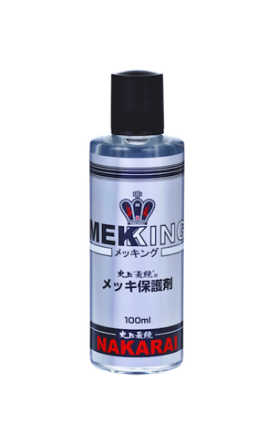
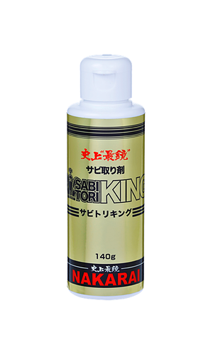

为了防止除锈后再次生锈，SABITORI KING用来去除电镀层的生锈情形，MEKKING可以维护镀层的光泽
这两种产品皆可应用于各种电镀涂料，如摩托车，水上摩托车，汽车等。


- ※ 若将MEKKING放置于30℃以上之场所（例如：夏天或车库中的汽车），MEKKING会蒸发并且呈现固态状。请保持在比较凉爽的地方，如在房间里。
- ※ 若没有完全盖紧黑色盖子，可能导致蒸发，使用后请密封。

为了防止除锈后再次生锈，SABITORI KING用来去除电镀层的生锈情形，MEKKING可以维护镀层的光泽
这两种产品皆可应用于各种电镀涂料，如摩托车，水上摩托车，汽车等。